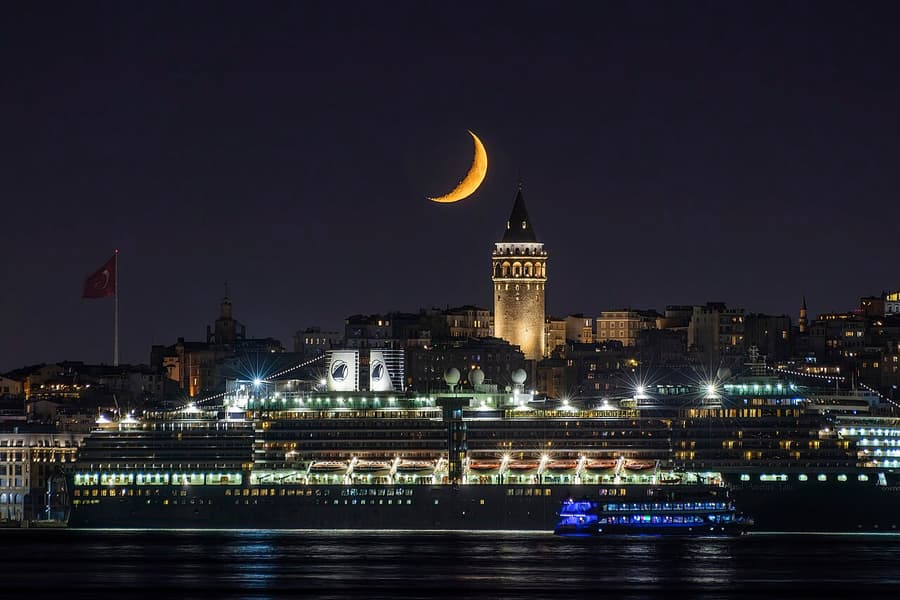
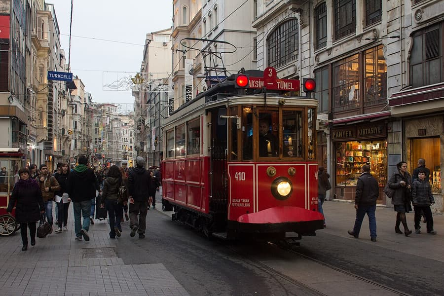
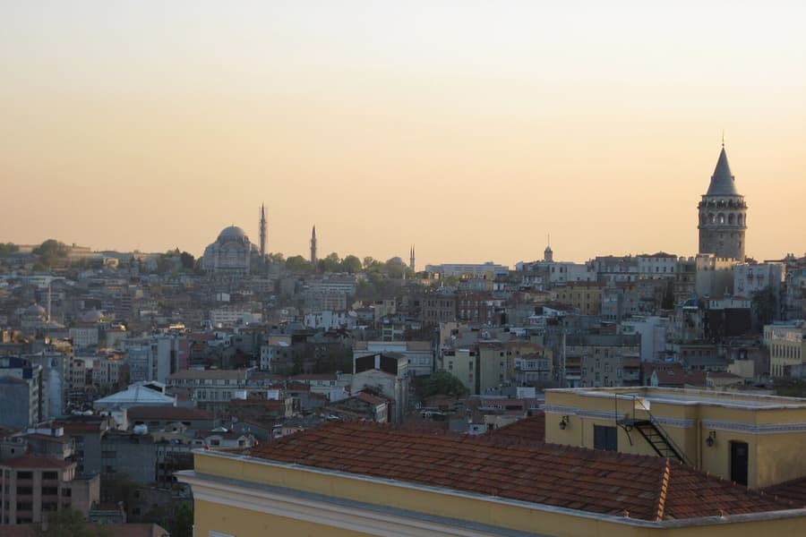
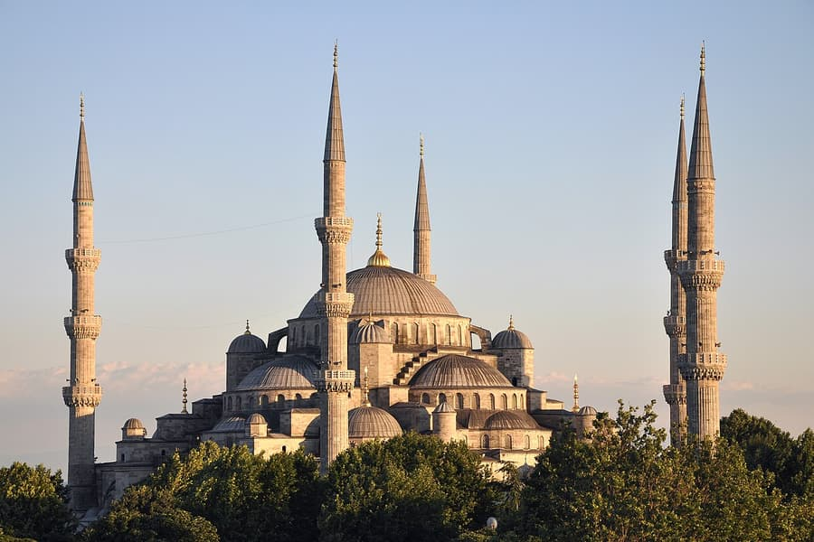
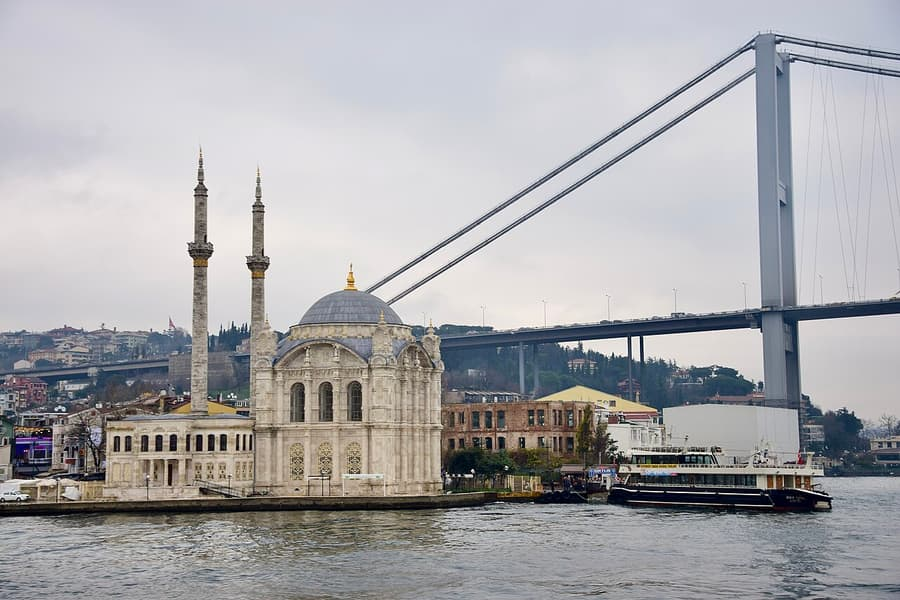
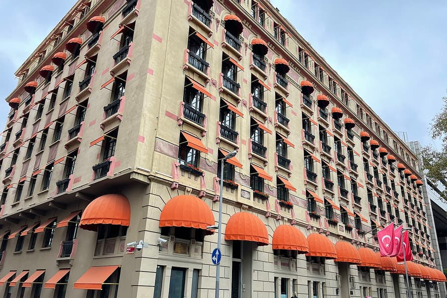
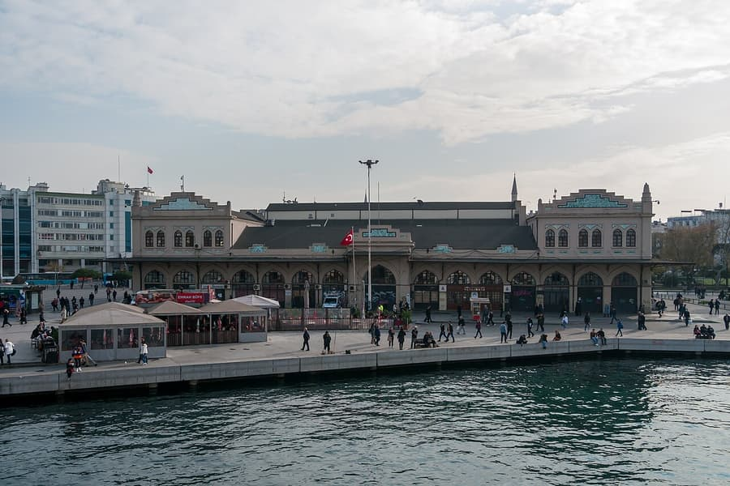

Istanbul is huge, and where you sleep shapes your whole trip: how much you walk, how late you can stay out, how much time you spend in traffic. We host guests in Galata, Taksim and Çukurcuma, so we are not neutral — but below we describe every area as honestly as we would to a friend, including the places where we have no apartments.
The historic centre (European side)
Where most first-time visitors should stay: everything famous is within walking distance or one tram ride.

Galata & Karaköy
Best for: first visits, couples, food lovers. The neighbourhood around Galata Tower is the most balanced base in the city: cafés, restaurants and rooftop bars on every corner, the old city just across Galata Bridge (a 25-minute walk or 10 minutes by T1 tram from Karaköy), and ferries to the Asian side from the Karaköy pier. Şişhane metro (M2) connects you to Taksim in two stops. Downsides: steep hills and stairs everywhere, and the streets right around the tower are busy until late.

Taksim & İstiklal
Best for: nightlife, shopping, easy transport. Taksim Square is the city’s main transport hub: the M2 metro, the funicular down to Kabataş (ferries and the T1 tram) and the Havaist airport buses all start here. İstiklal Avenue runs 1.4 km from the square down to Galata, lined with shops, cinemas, churches and side streets full of bars. Downsides: the square itself is crowded and noisy, and quality varies a lot from street to street — choose a quiet side street rather than the main avenue.

Cihangir & Çukurcuma
Best for: longer stays, a calmer local feel, remote workers. A 10-minute walk below Taksim, Cihangir is where artists and writers live: leafy streets, neighbourhood cafés, cats on every doorstep and terraces looking out over the Bosphorus. Next door, Çukurcuma is known for its antique shops and the Museum of Innocence. You get the centre without the crowds. Downsides: no metro station of its own (Taksim or Tophane tram are 10–15 minutes on foot) and, again, plenty of hills.

Sultanahmet
Best for: short sightseeing trips, families with children, visitors who want to be near the mosques. Hagia Sophia, the Blue Mosque, Topkapı Palace, the Basilica Cistern and the Grand Bazaar are all within a short walk — unbeatable if you only have two or three days. Downsides: it is mostly hotels rather than apartments, restaurants are touristy and pricey, and the area gets very quiet after 10 pm. The T1 tram is the only rail connection, so evenings in Galata or Karaköy mean a tram or taxi back.
Along the Bosphorus and uptown

Beşiktaş & Ortaköy
Best for: a lively local base by the water, returning visitors, football fans. Beşiktaş is a real neighbourhood full of students, fish restaurants and breakfast cafés, with ferries to Kadıköy and Üsküdar every few minutes. Dolmabahçe Palace is next door and Ortaköy’s waterfront mosque is a 15-minute walk along the Bosphorus. Downsides: no metro to the old city (bus, ferry or taxi to Kabataş and then the tram), heavy traffic on the coast road, and match days at the stadium are loud.

Nişantaşı
Best for: shopping, upscale dining, business travellers. Istanbul’s most elegant district: designer boutiques on Abdi İpekçi Street, smart cafés and restaurants, and Maçka Park nearby. Osmanbey metro (M2) is one stop from Taksim. Downsides: it feels more like a polished modern city than historic Istanbul, prices are the highest in town, and you will commute to every major sight.
The Asian side

Kadıköy & Moda
Best for: travellers on a budget, food markets, seeing everyday Istanbul. Kadıköy is the Asian side’s lively centre: a huge food market, cheap and excellent eateries, record shops, bars, and the seaside promenade of Moda for sunset. The 20-minute ferry to Karaköy or Eminönü is one of the best rides in the city and costs the same as a bus ticket. Downsides: every trip to the main sights starts with a ferry or the Marmaray train, so plan your evenings around the last boats (around midnight).
Quick answer: which area suits you?
First time, 3–5 days
Galata or Karaköy. You can walk to the old city, reach Taksim in minutes and have the best choice of restaurants in the evening.
Only 1–2 days of sightseeing
Sultanahmet. You will save every minute of transport and see the big monuments early, before the tour groups arrive.
Families and large groups
A large apartment in Galata or Taksim gives everyone their own room and a shared living room and kitchen — usually cheaper and more comfortable than several hotel rooms. Check for a lift if you have small children or heavy luggage.
Nightlife
Taksim and the streets between İstiklal and Galata (Asmalımescit, Nevizade). On the Asian side, Kadıköy’s bar streets.
A month or longer
Cihangir, Çukurcuma or Moda: quiet streets, neighbourhood cafés and a real local routine, still close to the centre.
Tight budget
Kadıköy offers the best value. The very cheap hotels around Laleli and Aksaray are close to the old city, but the area is busy with wholesale trade by day and not pleasant to walk at night.
On the map
Tap a pin for directions. Gold pins are our apartments.
Map data © OpenStreetMap contributors.
Before you book
- Istanbul is built on hills. In Galata, Cihangir and Çukurcuma, ask whether the building has a lift and how far the door is from where a taxi can stop.
- Being close to a metro, tram or ferry stop matters more than the distance on the map: traffic can turn a 5 km taxi ride into 45 minutes.
- Buy one İstanbulkart and use it for the metro, tram, buses and ferries. It can be tapped for several people travelling together.
- Halal food is the norm across Istanbul, and you will find a mosque within a few minutes’ walk in every neighbourhood in this guide.
- Prices peak in April–May and September–October and around holidays. Book early for those dates.
Stay in the heart of Galata
Our apartments in Galata, Taksim and Beyoğlu are a short walk from everything in this guide. Book direct and pay 10% less than on Airbnb.